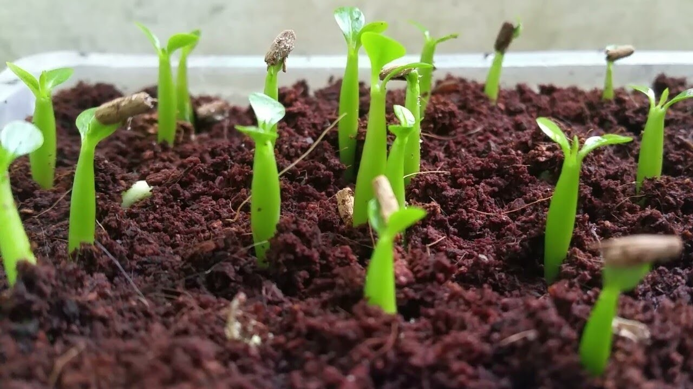
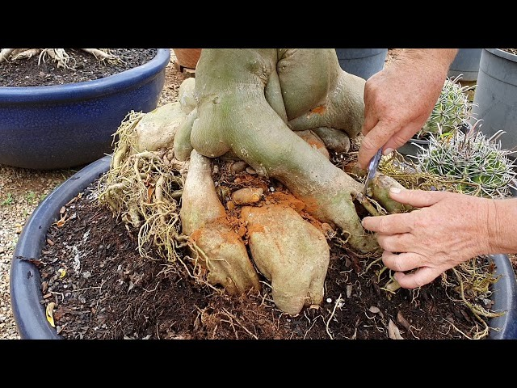
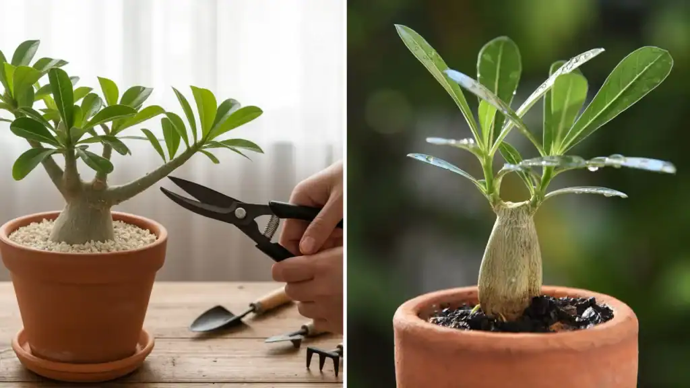

Caudex consolidado
Base larga, madura e eficiente no armazenamento de água e nutrientes.
Nesta fase, o foco sai do estirão e passa para robustez, floração recorrente, manutenção técnica e valorização estética do caudex.
Base larga, madura e eficiente no armazenamento de água e nutrientes.
Sistema radicular grosso e ramificado para estabilidade e vigor.
Floração mais frequente e potencial real de produção de sementes.
Expansão de galhos ocorre em ritmo cadenciado e controlado.
Maior tolerância a variações climáticas e seca curta.
Cores mais vivas, maior volume e ciclos mais frequentes.
Caudex mais rugoso, definido e visualmente imponente.
Priorize formulações ricas em Fósforo e Potássio (ex: NPK 04-14-08), com micronutrientes como Cálcio e Boro para sustentar floração e formação estrutural.
Elevação gradual no replantio para exposição de raízes e acabamento artístico.
Cria copa densa e equilibrada; poda drástica renova plantas estioladas.
Viabiliza cruzamentos de cores e produção de vagens com maior controle.
Plantas maduras funcionam como cavalos de alto desempenho para variedades raras.
| Sintoma | Causa provável | Ação recomendada |
|---|---|---|
| Caudex amolecendo | Excesso de umidade e apodrecimento | Reduzir rega, revisar drenagem e remover áreas comprometidas |
| Galhos finos e longos | Falta de luz (estiolamento) | Aumentar sol direto progressivamente |
| Queda de botões | Deficiência de Boro/Cálcio ou estresse térmico/hídrico | Corrigir adubação e estabilizar manejo |
| Perda de vigor sem causa aparente | Cochonilha de raiz/ácaros | Inspeção periódica de substrato e brotações novas |
4-6h
1-2 anos
< 10°C
2-4 ciclos
6-12 meses
< 5%



Informe as condições atuais para receber um diagnóstico operacional rápido.
Status: Estável e produtiva
Risco: Baixo
Ação prioritária: Manter adubação rica em P e K + inspeção quinzenal.
Na fase adulta, o sucesso vem da constância: luz correta, rega técnica, substrato drenante e nutrição de floração. Com manejo estável, a planta entrega valor estético e produtividade elevada por muitos anos.